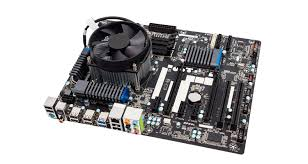

Welcome my website <<
Previous Homework
Pch1 1、Introduction
原文:This lesson will cover the basics of PC Hardware. First, you will learn the various parts of both desktop and laptop computers. Next, you will discover basic terms that are associated with computers, such as hardware, software, and firmware. You will learn the most basic functions of a computer: input, output, storage, and processing. Next, you will explore various input and output interfaces on the computer and the associated cables. Finally, you will review connections between common peripherals and discuss the standard ports.

翻譯:本課將介紹硬體的基礎知識。首先，您將學習台式計算機和攜帶式計算機的各個部分。接下來，您將發現與計算機關聯的基本術語，例如硬體，軟體和韌體。您將學習計算機的最基本功能：輸入，輸出，存儲和處理。接下來，您將探索計算機上的各種輸入和輸出接口以及相關的電纜。最後，您將回顧通用外設之間的連接並討論標準端口。
Pch1 2、Functions of Computers
原文:What makes a computer a computer? Does a computer have to have certain pieces to be considered a computer? Consider the computers of the 1980s: they all included a display screen, a keyboard, and a processing unit. Over time, the computers have evolved into devices that do not look like a “typical” computer. Consider the iPhone or Android tablet, where the method of input relies on touch, without the use of a separate keyboard. How about the calculator watch displayed below; is it a computer?
Regardless of the form factor of the machine, four basic functions — input, output, storage, and processing — make a computer. Below is a display of how those functions work together.
So, as we consider the history of computers and the future of computers, we must consider what is and what is not a computer. Obviously, our desktops and laptops are computers, since they perform the input, processing, output, and storage functions. But so also are our cellular phones and smartphones, since they perform all these functions. What about our televisions? Many of these are complex computers as well, since they take information from our input using the remote control, process the information, and return an output, such as an on-demand movie. Many of these televisions also store the information, such as your favorite channels or even the video content itself for later playback. Even some thermostats are computers, since they also perform these functions, such as the “smart thermostats,” like the NEST and other popular brands. Remember, the main determination of whether something is a computer or not relies on the functions it performs: does it perform input, processing, output, and storage? If so, then it is a computer.
翻譯:是什麼使計算機成為計算機？一台計算機是否必須具有某些部件才能視為計算機？考慮一下1980年代的計算機：它們都包括顯示屏，鍵盤和處理單元。隨著時間的流逝，計算機已經演變為看起來不像“典型”計算機的設備。考慮iPhone或Android平板電腦，其中輸入方法依靠觸摸，而不使用單獨的鍵盤。下面顯示的計算器手錶怎麼樣？是電腦嗎？ 不論機器的外形尺寸如何， 計算機都具有四個基本功能（輸入，輸出，存儲和處理）。 因此，當我們考慮計算機的歷史和計算機的未來時，我們必須考慮什麼是計算機，什麼不是計算機。顯然，我們的桌上型電腦和筆記本電腦是計算機，因為它們執行輸入，處理，輸出和存儲功能。但是，由於我們的手機和智能手機執行所有這些功能，所以它們也是如此。那我們的電視呢？其中許多計算機也是複雜的計算機，因為它們使用遙控器從我們的輸入中獲取信息，處理信息並返回輸出，例如點播電影。這些電視中的許多電視也會存儲信息，例如您喜歡的頻道，甚至是視頻內容本身，以供以後播放。甚至某些恆溫器都是計算機，因為它們也執行這些功能，例如“智能恆溫器”，像NEST和其他熱門品牌一樣。記住，對某物是否是計算機的主要確定取決於它執行的功能：它執行輸入，處理，輸出和存儲嗎？如果是這樣，則它是一台計算機。
Pch1 3、Hardware
原文:A computer system includes hardware, software, and firmware. To build a computer, we must first gather the required hardware. The hardware is the part of the computer that you can touch and feel. When most people see a typical computer, they understand that there are physical components to what they are using, such as the the hard metallic or plastic System unit, central processing unit (CPU), power supply, disk drives, and other essential components. Hardware is limited by its manufacture date and specifically by the motherboard installed. Depending on age and availability, some of the hardware items may be expensive to acquire, repair, or replace. For example, if the computer is running slower over time as you add newer software, it may be necessary to increase the amount of physical memory, called RAM (random access memory), in the computer. In order to do this, the technician would need to purchase the correct size, speed, and style of memory according to the motherboard specifications and install it in the computer which will then enhance its ability to process information more quickly.
Computer hardware consists of the mechanical and electrical parts of the computer. Data flows through the motherboard in what is known as the system bus. External ports, which are discussed in more detail further in this lesson, allow peripheral devices to be connected to the system unit. Common ports are USB, serial, and parallel ports.
Peripheral devices consist of hardware attached to the system unit and are designated as input, output, or both. Traditional input device examples are the mouse and keyboard which are used to input data.

Output devices consist of common items such as monitors, speakers, and printers. All of these devices are ways that the computer can give feedback to the user through either visual or auditory output.
Traditionally singular devices have evolved to become both input and output. Gaming Joysticks which provide feedback to the user through vibrations and of course the touch-screen display now serve as both.
翻譯:計算機系統硬體，軟體和韌體。要構建計算機，我們必須首先收集所需的硬體。硬體是您可以觸摸和感覺到的計算機的一部分。當大多數人看到一台典型的計算機時，他們就會知道所使用的是物理組件，例如，硬金屬或塑料系統單元，中央處理器（CPU），電源，磁盤驅動器和其他必要組件。硬體受製造日期限制，特別是受安裝的主板限制。根據使用年限和可用性，硬體項目的購置，維修或更換可能會很昂貴。例如，如果計算機隨著時間的推移運行速度變慢，而您添加了更新的軟體，則可能有必要增加物理內存量，稱為計算機中的RAM（隨機存取存儲器）。為此，技術人員需要根據主板規格購買正確的大小，速度和內存類型，然後將其安裝在計算機中，這將增強其更快地處理信息的能力。
計算機硬體由計算機的機械和電氣部分組成。數據以所謂的系統總線流經母板。在本課程中將進一步詳細討論的外部端口允許將外圍設備連接到系統單元。通用端口是USB，串行和並行端口。
外圍設備由連接到系統單元的硬體組成，並被指定為輸入，輸出或兩者。傳統的輸入設備示例是用於輸入數據的鼠標和鍵盤。
輸出設備由通用項目組成，例如監視器，揚聲器和打印機。所有這些設備都是計算機可以通過視覺或聽覺輸出向用戶提供反饋的方式。
傳統上，單個設備已演變為輸入和輸出。通過振動向用戶提供反饋的遊戲操縱桿，當然觸摸屏顯示器現在兼用作兩者。
Pch1 4、Software
原文:Software is completely intangible and cannot be physically touched. Software, in its purest form, is a series of 1s and 0s (bits) that make up the code that gives the computer its instructions on how to perform a certain task. While you may be able to touch the media on which the software is stored (like a CD or DVD), you cannot really touch the software code itself.
The most basic software that a computer requires is the operating system. There are numerous operating systems on the market today, including various versions of Microsoft Windows, Macintosh OS X, Linux, Android, and iOS, to name just a few. The operating system provides the standard methods for saving, retrieving, changing, printing, and transmitting information in the computer. Operating systems contain internal commands, which are programs that are built into the operating system to perform basic tasks such as file management (delete, copy, and rename files). Additionally, operating systems also contain external commands, which are added programs to complete more complicated functions, such as defragmentation of a hard drive or handling the remote control of another computer on the network.
Finally, there are software programs called applications. These programs are used to create, store, modify, and view information that you create. Applications, such as Microsoft Office or Adobe Acrobat, allow you to read and create documents and presentations. Other applications, such as games and web browsers, may instead be used for entertainment.
翻譯:軟體是完全無形的，不能被實際觸摸。最純粹形式的軟體是由一系列1和0（位）組成的代碼，這些代碼向計算機提供有關如何執行特定任務的指令。雖然您可以觸摸軟體的介質（例如CD或DVD），但實際上不能觸摸軟體代碼本身。
計算機所需的最基本的軟體是操作系統。當今市場上有許多操作系統，其中包括Microsoft Windows，Macintosh OS X，Linux，Android和iOS的各種版本。操作系統提供了用於在計算機中保存，檢索，更改，打印和傳輸信息的標準方法。操作系統包含內部命令，這些內部命令是操作系統中內置的用於執行基本任務（例如文件管理（刪除，複製和重命名文件））的程序。此外，操作系統還包含外部命令，這些命令是添加的程序，以完成更複雜的功能，例如對硬盤驅動器進行碎片整理或處理網絡上另一台計算機的遠程控制。
最後，有稱為應用程序的軟體程序。這些程序用於創建，存儲，修改和查看您創建的信息。諸如Microsoft Office或Adobe Acrobat之類的應用程序允許您閱讀和創建文檔和演示文稿。可以將其他應用程序（例如游戲和Web瀏覽器）用於娛樂。
Pch1 5、Firmware
原文:Firmware is a combination of hardware and software, often called “software on a chip.” Firmware allows control of the device to which the chip is connected. A firmware chip contains specialized software and is often attached to motherboards, optical drives (such as CD, DVD, or Blu-ray), mass storage devices, and other specialized hardware.
In older generations of firmware, the firmware was not upgradable unless you replaced the physical chip, but in recent years firmware has been designed to be “flashable.” This means that the chip can be upgraded if the software is outdated or has a programming error. This firmware “flash” replaces the older software on the chip with the latest version, improving performance or enhancing security.
The most common type of firmware found in a computer is called the BIOS (basic input/output system), which provides the computer with the most basic of tasks before the operating system is even loaded. Without the BIOS, the computer would be rather useless, as it wouldn’t even be able to read the hard drive and load the operating system. Firmware is persistent: it remains on the chip even after the power is removed, unlike temporary storage (such as RAM).
翻譯:
韌體是硬體和軟體的組合，通常稱為“晶片上的軟體”。韌體允許控制芯片所連接的設備。韌體晶片包含專用軟體，通常連接到主板，光碟驅動器（例如CD，DVD或藍光），大容量存儲設備和其他專用硬體。
在較早版本的韌體中，除非更換了物理芯片，否則韌體無法升級，但是近年來，韌體被設計為“可刷新的”。這意味著，如果軟體過時或出現編程錯誤，則可以升級芯片。韌體“閃存”用最新版本替換了芯片上的舊軟體，從而提高了性能或增強了安全性。
計算機中最常見的韌體類型稱為BIOS（基本輸入/輸出系統），BIOS甚至在加載操作系統之前就為計算機提供了最基本的任務。沒有BIOS，計算機將變得毫無用處，因為它甚至無法讀取硬盤驅動器並加載操作系統。韌體具有持久性：與臨時存儲（例如RAM）不同，韌體即使在斷電後仍保留在芯片上。
Pch1 6、Componentization Standardization
原文:Componentization is the process of breaking down large and complex items into simple, reusable, and interchangeable pieces. For many years, computer software and hardware were made by individual companies building things that only worked for a single system. For example, if IBM made a network card, it would not work in a Compaq or Dell computer. Over the years, hardware developers realized that if they could agree to a set of standards, they could create components that could be built to work together using standard interfaces, which saves time, money, and complexity. This same concept is now being used in the software world under object-oriented programming — a standardized method of programming.
Standardization allows for a set of rules that everyone can follow so that hardware is interoperable and software is interoperable. This increases the ability to have componentization of hardware and software, since the input and output created are standardized. For example, web pages are coded in HTML (HyperText Markup Language), which all web browsers understand. Therefore, the user can use any web browser and still get the content they are interested in viewing because of the standardization of the system.
翻譯:組件化是將大型和復雜項目分解為簡單，可重用和可互換的部分的過程。多年來，計算機軟件和硬件是由獨立的公司製造的，這些公司只能在單個系統上工作。例如，如果IBM製作了網卡，則它不能在Compaq或Dell計算機中工作。多年以來，硬件開發人員意識到，如果他們同意一套標準，他們可以創建可以使用標準接口構建為可以協同工作的組件，從而節省了時間，金錢和復雜性。現在，在面向對象的程序設計（一種標準化的程序設計方法）下的軟件世界中使用了相同的概念。
標準化允許每個人都可以遵循一組規則，以便硬件可互操作，軟件可互操作。由於創建的輸入和輸出是標準化的，因此這提高了對硬件和軟件進行組件化的能力。例如，網頁以HTML（超文本標記語言）編碼，所有網絡瀏覽器都可以理解。因此，由於系統的標準化，用戶可以使用任何Web瀏覽器，並且仍然可以獲得他們感興趣的內容。
Pch1 7、Connection Interfaces and Cables
原文:When looking at a customer’s personal computer, you must be able to easily identify the various components that make up the computer by sight. As you look at the image of the computer, you notice the various parts, such as the CD/DVD drive and the memory card reader bay. Both of these components would be classified as part of the storage subsystem. The headphone jack is used for audio output, while the microphone jack is used for audio input. The USB and FireWire ports are used for both input and output, as well as storage, depending on the device that is connected to the port. For example, if we connect a printer to the USB port, it would be used for output, but if we instead connected a mouse to the USB port, it would be used for input.
翻譯:查看客戶的個人計算機時，您必須能夠通過視線輕鬆識別組成計算機的各種組件。當您查看計算機的圖像時，會注意到各個部分，例如CD / DVD驅動器和存儲卡讀取器托架。這兩個組件都將歸類為存儲子系統的一部分。耳機插孔用於音頻輸出，而麥克風插孔用於音頻輸入。USB和FireWire端口用於輸入和輸出以及存儲，具體取決於連接到端口的設備。例如，如果我們將打印機連接到USB端口，它將用於輸出，但是如果我們將鼠標連接到USB端口，則它將用於輸入。
Pch1 8、External Components of the Desktop System Unit
原文:The lab activity below is designed to help you locate and understand the purpose of the various bays and ports on a desktop PC system unit. To identify components, move your mouse pointer over the name of the component or the image. Then be sure to click on each component to see a detailed view. In the detailed view, you will be able to examine the cables of various peripherals. You also will be able to see the most common bays and the way peripherals fit into them.
翻譯:下面的實驗活動旨在幫助您查找和了解台式PC系統單元上各種托架和端口的用途。要識別組件，請將鼠標指針移到組件或圖像的名稱上。然後，請確保單擊每個組件以查看詳細視圖。在詳細視圖中，您將能夠檢查各種外圍設備的電纜。您還將能夠看到最常見的托架以及外圍設備裝入它們的方式
Pch1 9、Connections Between Common Peripherals and Standard Ports
The peripherals connect to the computer via standard ports. Ports allow for information to flow into or out of the computer as part of the input and output subsystems. External devices, such as keyboards, mice, printers, scanners, storage devices, monitors, and others can connect to the computer through various types of cables, which connect to specific ports. On most modern systems, this has been reduced down to a common, standard interface, the universal serial bus port (USB port). Older systems have various ports for various functions, which are now referred to as legacy ports, such as PS/2, serial, and parallel ports. They were difficult to configure and required hardware resources to be dedicated to them, such as interrupt requests, direct memory access, and specific I/O (input/output) port addresses. In USB, this is all handled by the operating system automatically. This makes hardware conflicts rare in current systems. Many customers will still have computers with legacy ports. So, it is important to understand multiple ports and connections.
翻譯:外圍設備通過標準端口連接到計算機。端口允許信息作為輸入和輸出子系統的一部分流入或流出計算機。外部設備（例如鍵盤，滑鼠，打印機，掃描器，存儲設備，顯示器和其他設備）可以通過各種類型的電纜連接到計算機，這些電纜連接到特定的端口。在大多數現代系統上，這已簡化為通用的標準接口，即通用串行總線端口（USB端口）。較舊的系統具有用於各種功能的各種端口，這些端口現在稱為傳統端口，例如PS / 2，串行和並行端口。它們很難配置，並且需要專用於它們的硬件資源，例如中斷請求，直接內存訪問和特定的I / O（輸入/輸出）端口地址。在USB中，這全部由操作系統自動處理。這使得在當前系統中很少發生硬件衝突。許多客戶仍將擁有帶有舊端口的計算機。因此，了解多個端口和連接很重要。
Pch1 10、USB and PS/2
原文1:
USB :The universal serial bus (USB) has replaced many of the external input and output ports on modern computers. In fact, USB can connect virtually any device to a computer, in modern devices.
Things such as mice and keyboards, which used to use PS/2 or serial ports, now use USB. Things like printers and scanners, which once used parallel or SCSI ports, now use USB as well. Small computer system interface (SCSI) is a set of parallel interface standards developed by the American National Standards Institute (ANSI) for attaching printers, disk drives, scanners and other peripherals to computers. SCSI (pronounced "skuzzy") is supported by all major operating systems. USB began with version 1.1, which provided two speeds of operations: low-speed (1.5 Mbps for input devices such as mice/keyboards) and full-speed (12 Mbps for other devices, such as webcams, digital cameras, scanners, and printers). USB 2.0 further increased speed to what is known as high-speed or hi-speed (480 Mbps), allowing for USB to provide faster access to external storage devices such as hard drives, helping to replace SCSI and FireWire ports. USB 3.0, the current version, is known as superspeed, because it provides up to 5 Gbps of bandwidth for very fast access to external devices and can be identified by the blue color. Newer versions of USB are backward compatible with older versions, but you should not connect different versions of USB on the same port, as this slows the port down to the lowest version. For example, if you plug in a four-port USB hub to a USB 3.0 port, but then connect a USB 1.1 mouse to the hub, the entire four-port hub will now run at a maximum speed of 12 Mbps (USB 1.1 speeds). Each USB port can be daisy-chained to provide up to 127 devices per port, using USB hubs.
USB cables should be kept under three meters (approximately nine feet) in length for USB 1.1 and 3.0. For the USB 2.0 variant, you can use cables up to five meters (approximately 15 feet) without issues. If you use cables longer than the recommended length, you may get errors in your input/output over USB, so it is best to keep the USB cables short. If you need a longer cable run, you must use a hub as a repeater to help boost the power signal over the USB cable. There are two types of hubs: self-powered and bus-powered. Self-powered hubs have their own power adapter and connect to the wall outlet to provide power to the hub. Bus-powered are instead powered solely from the source USB port that they are connected to on the computer. This provides minimal amperage for the devices connected to the USB hub that can cause issues when connecting multiple hubs to each other. For connection of multiple hubs, it is best practice to use self-powered hubs. Each USB port can support up to 127 different devices in the chain, with the root hub for the computer having two ports directly connected to the motherboard. If you need more USB ports, you can do this by adding hubs (self-powered or bus-powered), using motherboard USB header cables, or adding expansion cards that contain more USB ports.
翻譯1:
該通用串行總線（USB）已經取代了許多關於現代計算機外部輸入和輸出端口。實際上，在現代設備中，USB幾乎可以將任何設備連接到計算機。
鼠標和鍵盤等以前使用PS / 2或串行端口的設備現在使用USB。曾經使用並行或SCSI端口的打印機和掃描儀之類的東西現在也使用USB。小型計算機系統接口（SCSI）是由美國國家標準協會（ANSI）開發的一組並行接口標準，用於將打印機，磁盤驅動器，掃描儀和其他外圍設備連接到計算機。所有主要操作系統都支持SCSI（讀作“ skuzzy”）。USB從版本1.1開始，提供兩種運行速度：低速（對於鼠標/鍵盤等輸入設備為1.5 Mbps）和全速（對於網絡攝像頭，數碼相機，掃描儀和打印機等其他設備為12 Mbps） ）。USB 2.0將速度進一步提高到所謂的高速或高速（480 Mbps），允許USB提供對硬盤驅動器等外部存儲設備的更快訪問，從而有助於替換SCSI和FireWire端口。當前版本的USB 3.0被稱為超高速，因為它提供高達5 Gbps的帶寬，可以非常快速地訪問外部設備，並且可以通過藍色識別。較新版本的USB向後兼容較舊版本的USB，但是您不應在同一端口上連接不同版本的USB，因為這會將端口速度降低到最低版本。例如，如果將四端口USB集線器插入USB 3.0端口，然後將USB 1.1鼠標連接到集線器，則整個四端口集線器現在將以12 Mbps的最大速度運行（USB 1.1速度）。每個USB端口都可以使用USB集線器進行菊花鏈連接，以每個端口提供多達127個設備。
對於USB 1.1和3.0，USB電纜的長度應保持在三米（約9英尺）以下。對於USB 2.0版本，您可以使用最長5米（約15英尺）的電纜而不會出現問題。如果使用的電纜長度超過建議的長度，則通過USB進行的輸入/輸出可能會出現錯誤，因此最好使USB電纜的長度短。如果需要較長的電纜，則必須使用集線器作為中繼器，以幫助增強USB電纜上的電源信號。集線器有兩種類型：自供電和總線供電。自供電的集線器具有自己的電源適配器，並連接至壁裝電源插座，以為集線器供電。總線供電僅由它們在計算機上連接的源USB端口供電。這為連接到USB集線器的設備提供了最小的電流強度，當將多個集線器相互連接時會引起問題。對於連接多個集線器，最佳做法是使用自供電集線器。每個USB端口可在鏈中最多支持127個不同的設備，計算機的根集線器具有直接連接到主板的兩個端口。如果需要更多USB端口，則可以通過添加集線器（自供電或總線供電），使用主板USB接頭連接線或添加包含更多USB端口的擴展卡來實現。計算機的根集線器有兩個直接連接到主板的端口。如果需要更多USB端口，則可以通過添加集線器（自供電或總線供電），使用主板USB接頭連接線或添加包含更多USB端口的擴展卡來實現。計算機的根集線器有兩個直接連接到主板的端口。如果需要更多USB端口，則可以通過添加集線器（自供電或總線供電），使用主板USB接頭連接線或添加包含更多USB端口的擴展卡來實現。
原文2:
PS/2:PS/2 ports, also known as mini-DIN ports, were commonly used for keyboards and mice until the past decade. Recently, these ports have been replaced by USB in most machines. These ports, though, are color-coded for the device which they are intended to be used with. The keyboard port is colored purple, and the mouse port is colored green. Even though these ports look identical, they are not interchangeable. If you plug a mouse into the keyboard port, it simply won’t work. Additionally, unlike USB, these ports are not hot-swappable. Instead, you must restart the machine after plugging the device in for the computer to recognize the new mouse or keyboard.
翻譯2:PS / 2端口，也稱為mini-DIN端口，在過去十年中一直廣泛用於鍵盤和鼠標。最近，在大多數機器中，這些端口已被USB取代。但是，這些端口已針對要使用的設備進行了顏色編碼。鍵盤端口為紫色，鼠標端口為綠色。即使這些端口看起來相同，也不能互換。如果將鼠標插入鍵盤端口，則根本無法使用。此外，與USB不同，這些端口不可熱插拔。而是必須在插入設備後重新啟動機器，計算機才能識別新的鼠標或鍵盤。
Welcome my website <<
Previous